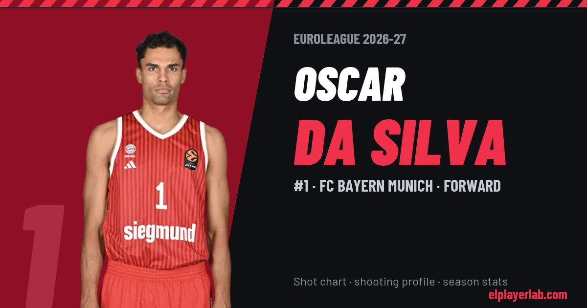

FC Bayern Munich · Euroleague 2026-27
Oscar Da Silva
#1 · Forward · FC Bayern Munich · 2026-27 · 3 games · 7.3 pts · 1.7 reb · 0.7 ast a game

- Number
- 1
- Position
- Forward
- Height
- 205 cm
- Weight
- 104 kg
- Born
- 1998-09-21
- Country
- Germany
Career
- Bayern Munich 2024-2027
- FC Barcelona 2022-2024
- Alba Berlin 2021-2022
- Ludwigsburg 2021
- Stanford (NCAA) 2017-2021
Euroleague Player Lab: shot charts, shooting profiles and season stats for every player, rebuilt after every game.